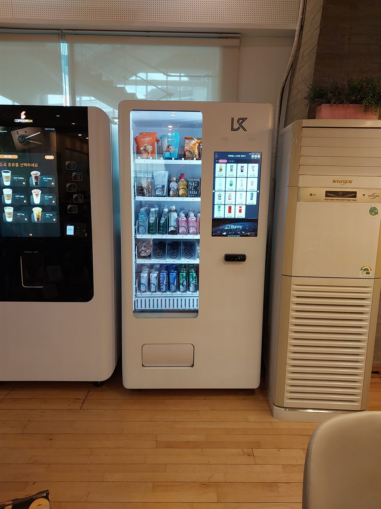

무인카페는 이미 커피 기계 한 대로 매장이 돕니다. 그래서 자판기를 더 놓을 때 사장님이 가장 먼저 걱정하시는 것은 "커피가 덜 팔리지 않느냐"는 부분입니다. 실제로는 반대인 쪽이 많습니다. 커피 기계는 뜨거운 음료와 아이스 커피까지가 한계인데, 손님이 찾는 것은 생수·탄산·이온음료처럼 커피가 아닌 찬 음료와 한 손에 들고 나갈 간식이기 때문입니다. 커피를 뽑으러 온 손님이 옆 칸에서 물 한 병을 더 집는 식으로, 같은 손님의 결제 금액이 올라갑니다.
이번 현장도 그런 자리였습니다. 자리를 정하며 먼저 본 것은 픽업 동선입니다. 커피 기계 앞은 손님이 컵이 내려오기를 기다리며 30초쯤 서 있는 구간이라, 자판기를 그 정면에 세우면 두 사람이 서로 막습니다. 그래서 커피 기계와 같은 벽을 따라 어깨를 나란히 하는 방향으로 붙여, 기다리는 사람과 음료를 고르는 사람이 겹치지 않게 했습니다. 다음은 바닥과 전원입니다. 목재 마루는 눌리면서 조금씩 기울기가 생기므로 수평을 다시 맞추고 바퀴를 잠갔습니다. 냉장 자판기는 상시 전원을 쓰는 기계라, 커피 기계와 같은 콘센트에 겹쳐 물리지 않도록 전원을 따로 잡고 선은 벽을 타게 정리했습니다. 실외기 바람이 닿는 자리도 피했습니다.
안양 무인카페에 맞는 구성
품목은 커피와 겹치지 않는 것부터 채웁니다. 생수와 탄산, 이온음료, 과일주스 계열을 넓게 잡고 커피 음료는 오히려 줄입니다. 옆에서 기계가 바로 뽑아 주는 커피와 같은 것을 캔으로 또 팔면 둘 다 안 나갑니다. 대신 커피 기계에 없는 것—차와 유제품, 제로 음료—을 채우면 칸이 골고루 빠집니다. 간식은 쿠키·마카롱처럼 커피와 함께 집어 가는 것과 견과·젤리처럼 들고 나가는 것을 반씩 섞었습니다. 유리문 안이 그대로 보이는 냉장 기계라 진열 자체가 광고가 되므로, 눈높이 칸에는 색이 잘 보이는 품목을 올렸습니다.
결제는 신용·체크카드와 삼성페이·카카오페이·네이버페이를 받습니다. 무인카페 손님은 이미 기계에 카드를 대는 데 익숙하므로 사용법을 따로 안내할 일이 거의 없습니다. 현금함이 없으니 수금하러 들를 일도 없고, 칸별 재고와 시간대별 판매는 휴대폰 앱에서 봅니다. 무인카페는 사장님이 매장에 상주하지 않는 업종이라 이 부분이 특히 중요합니다. 두어 주 기록이 쌓이면 어느 칸이 며칠에 한 번 비는지 보이고, 그때부터 채우러 가는 주기를 정하면 됩니다.
무인카페 한쪽, 좋은 점과 어려운 점
좋은 점은 사람을 더 쓰지 않아도 매출 항목이 하나 늘어난다는 것입니다. 무인카페는 이미 무인으로 돌고 있으니 자판기 한 대를 더 놓아도 관리 부담이 거의 그대로입니다. 실내라 비바람과 직사광선을 타지 않아 기계 수명과 냉장 효율에 유리하고, 매장 조명과 인테리어가 이미 잡혀 있어 기계가 따로 튀지도 않습니다. 커피를 안 마시는 손님, 커피를 이미 들고 들어온 손님까지 받을 수 있다는 점도 실제 매출로 이어집니다.
어려운 점도 있습니다. 자리 폭이 빠듯합니다. 무인카페는 좌석이 매출인 업종이라 기계 한 대가 테이블 한 자리를 먹는 셈이고, 좌석을 줄이지 않는 자리를 찾는 일이 설치의 절반입니다. 소음도 봅니다. 냉장 압축기가 돌 때 나는 소리가 조용한 카페에서는 신경 쓰일 수 있어, 좌석에서 한 칸이라도 떨어뜨리는 쪽이 낫습니다. 마지막으로 유통기한입니다. 카페 손님은 회전이 빠른 대신 품목 편차가 커서 안 나가는 칸은 오래 남습니다. 처음 한 달은 소량으로 여러 종류를 시험해 보고, 안 빠지는 품목은 과감히 빼는 편이 좋습니다.
안양 무인매장, 이런 자리가 잘 됩니다
안양은 만안구와 동안구의 성격이 뚜렷하게 다른 도시입니다. 동안구 평촌 쪽은 아파트 단지와 학원가가 맞붙어 있어 유동이 시간대별로 몰립니다. 범계역과 평촌역 사이 상권은 저녁에 학생과 학부모 통행이 크게 늘고, 이 때문에 무인카페·스터디카페·독서실 문의가 가장 자주 들어오는 구역입니다. 이번 같은 무인카페 자판기도 이 성격의 현장입니다. 관양동과 호계동 쪽은 지식산업센터와 사무용 건물이 이어져 사무실 휴게실·건물 로비 자리가 꾸준히 나옵니다. 인덕원역 주변은 환승 유동이 지나 짧게 머무는 손님이 모입니다.
만안구는 결이 다릅니다. 안양역 일대 상권은 상가 밀도가 높고 저녁 유동이 길게 이어지는 전통 중심가라 코인노래연습장·PC방·무인매장 같은 심야 업종이 많습니다. 안양동과 비산동은 주거와 상권이 붙어 있어 학원·병원 건물 문의가 잦고, 석수동은 서울 관악구·금천구와 맞닿아 출퇴근 유동이 지나는 자리입니다. 박달동 쪽은 공장과 창고가 섞인 생활권으로 공장 휴게실·물류 창고 성격의 설치가 나옵니다. 안양천을 따라 이어지는 산책로와 안양예술공원 주변은 주말 유동이 몰리는 계절 상권이라, 여름철 냉장 음료 회전이 특히 빠른 자리입니다.
안양 서비스 지역
안양동 · 석수동 · 박달동 · 비산동 · 관양동 · 평촌동 · 호계동 · 범계동 · 귀인동 · 달안동 · 부흥동 · 신촌동 · 갈산동 · 부림동
역세권 — 안양역 · 명학역 · 관악역 · 석수역 · 범계역 · 평촌역 · 인덕원역
인접한 군포 · 의왕 · 광명 · 과천 · 시흥 · 서울 관악 · 금천까지 같은 조건으로 나갑니다.
안양 무인창업, 이렇게 시작하시면 됩니다
설치비는 받지 않습니다. 자리 확인부터 품목 구성, 기계 반입, 카드 결제 연동, 재고 채우는 방법까지 한 번에 안내해 드립니다. 무인카페처럼 영업을 멈추지 않고 기계를 들여야 하는 곳은 손님이 적은 오전 시간대로 반입을 잡습니다. 상가 2층 이상이라면 엘리베이터 폭과 출입문 폭, 콘센트 위치 세 가지를 먼저 확인하고 견적을 냅니다. 기계 크기는 남는 벽 길이에 맞춰 고르면 되고, 좌석을 줄여야 할 정도라면 더 작은 모델로 바꿔 보는 쪽을 먼저 권합니다.
비용은 구입이 렌탈보다 유리한 편입니다. 렌탈료를 몇 년 내는 것보다 처음에 사 두는 쪽이 총액이 낮게 나오는 경우가 많습니다. 구성별 36개월 총비용은 구입 vs 렌탈 비교 가이드에 정리해 두었습니다.
안양 무인자판기 설치 상담
세워 둘 자리 사진 한 장만 보내 주셔도 됩니다. 남는 벽 길이와 콘센트, 반입 경로를 보고 어떤 크기가 맞을지 먼저 봐 드린 뒤 견적을 보내 드립니다.
※ 사진은 픽포스가 시공한 설치 사례이며, 글에 적힌 지역의 현장 사진은 아닙니다. 자판기 구성과 품목은 자리와 업종에 따라 달라지며, 무인카페·실내 매장 설치는 남는 벽 길이와 반입 경로, 전원 위치를 현장에서 먼저 확인합니다. 정확한 금액은 견적서로 안내드립니다.